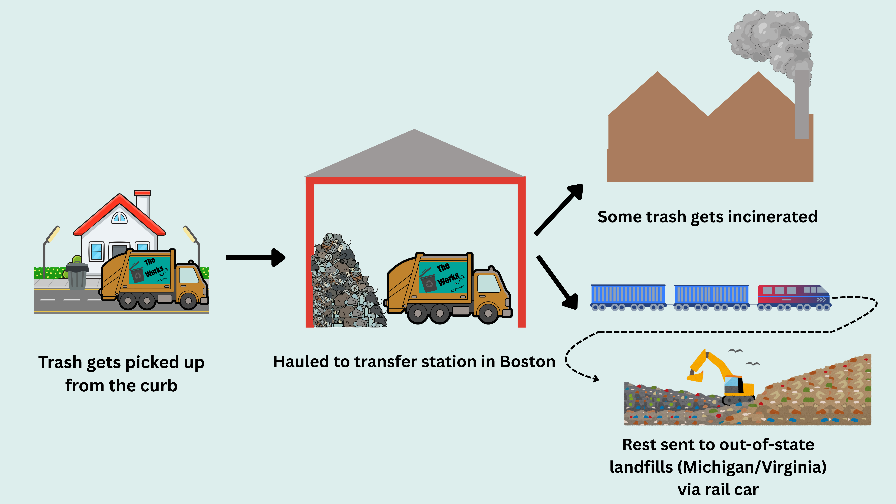
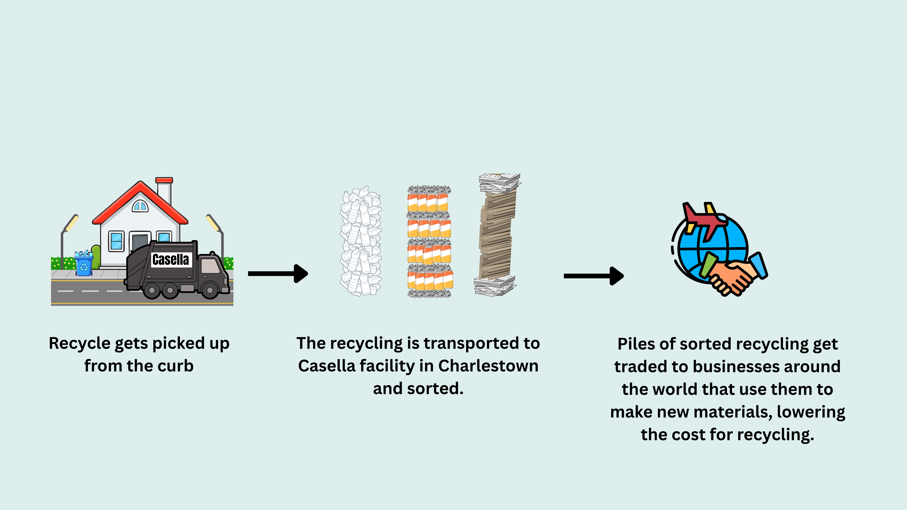
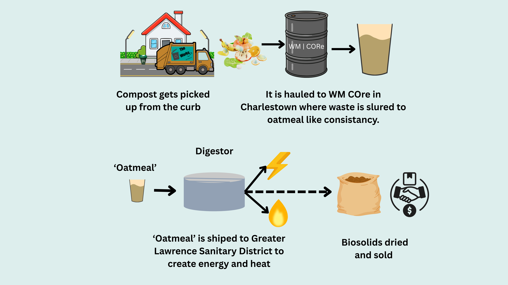
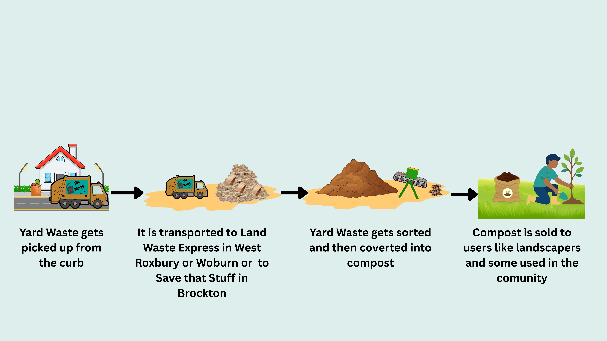

Journey of Trash
Trash collected from our curbsides is taken to a Boston holding facility. Part of this waste is processed at incinerators (Reworld) in Haverhill, MA, for energy recovery; the rest is transported via rail to landfills in Michigan and Virginia.

Journey of Recycle
Casella hauls recyclables to their Charlestown plant, where a state-of-the-art sorting system categorizes materials into the ten groups. These commodities are then sold to global manufacturers. This process offers a sustainable alternative to traditional disposal by promoting material reuse and significantly reducing waste management overhead. Below is a breakdown of where these commodities go and what they become:
| Commodity | End Site | New Product |
|---|---|---|
| Paper/Cardboard | NY, ME, India, Vietnam | Cardboard, tissues, paper towels |
| Plastics | NY, PA, AL | Toys, furniture, food containers |
| Aluminum | NY | Beer or soda cans |
| Tin Cans | PA | Steel cans or bicycles |
| Glass | MA | Road or building construction |

Journey of Compost
Food waste is hauled to the WM CORe facility in Charlestown, where it is processed into a slurry with the consistency of oatmeal. This organic material is then transported to the Greater Lawrence Sanitary District (GLSD), where it undergoes anaerobic digestion alongside municipal wastewater. This process generates methane gas, which is captured to produce electricity and heat. Finally, the remaining biosolids are dried and sold as a byproduct.

Journey of Yard Waste
Yard waste and Christmas trees are hauled to Landscape Express in Woburn or West Roxbury, or to Save That Stuff in Brockton, to be composted. The resulting compost is sold to landscapers and other soil users to offset waste management costs. Additionally, Save That Stuff provides 30 tons of finished compost back to the City annually. Each spring, the City hosts a compost giveaway for residents, while the Forestry Division uses the material to plant new trees and maintain its three nurseries. This process exemplifies a circular economy, returning local yard waste to the community as a valuable resource.

Journey of Others
Specialty items like textiles, electronics, and household hazardous materials are managed through dedicated programs. UTEC, a nonprofit serving high-risk young adults, provides mattress recycling by 'fileting' them to separate and sell the metal, foam, and cotton to global manufacturers. Used textiles and shoes collected from Helpsy (a certified B Corp) bins are sorted at their regional facility; high-quality items are resold internationally, while others are sent to recyclers for repurposing. Finally, electronics dropped off at the recycling center are handled by Good Point Recycling, where components are salvaged for repair or reuse before the remaining materials are recycled.